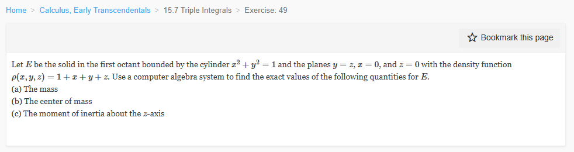

Please solve the problem in the following image.
(Image `20260928_010220_201116_utc_0800_0.png`. Alt text: Image: human_20260928_010220_201116_utc_0800)

20260928_010220_201116_utc_0800_0.png
End of problem
Answer
# Triple Integral Applications: Mass, Center of Mass, Moment of Inertia
## Step 1 — Describe the solid $E$
We are in the **first octant** ($x\ge 0,\ y\ge 0,\ z\ge 0$), inside the cylinder $x^2+y^2=1$, and between the planes $z=0$ (bottom) and $y=z$, i.e. $z=y$ (top). The plane $x=0$ is just the back wall of the octant.
So $E$ projects onto the quarter disk $D=\{(x,y):x\ge 0,\ y\ge 0,\ x^2+y^2\le 1\}$ in the $xy$-plane, and above each point of $D$ the height runs from $z=0$ up to $z=y$:
$$
E=\left\{(x,y,z):\ 0\le x\le 1,\ \ 0\le y\le \sqrt{1-x^2},\ \ 0\le z\le y\right\}
$$
In **cylindrical coordinates** $x=r\cos\theta,\ y=r\sin\theta,\ z=z$ the description becomes the cleanest (this is what makes the CAS work easy):
$$
E=\left\{(r,\theta,z):\ 0\le \theta\le \tfrac{\pi}{2},\ \ 0\le r\le 1,\ \ 0\le z\le r\sin\theta\right\},\qquad dV=r\,dz\,dr\,d\theta
$$
Note the top surface $z=y$ is a **tilted plane** through the $x$-axis: the solid is wedge-shaped, tallest where $y$ is largest.
---
pgfplots_1.png
---
## Step 3 — (b) The center of mass
By symmetry considerations there is **no** simplification here ($E$ is not symmetric in $x\leftrightarrow y$, and $\rho$ is not either), so all three moments must be computed:
$$
\bar x=\frac{M_{yz}}{m},\qquad \bar y=\frac{M_{xz}}{m},\qquad \bar z=\frac{M_{xy}}{m}
$$
where $M_{yz}=\iiint_E x\rho\,dV$, $M_{xz}=\iiint_E y\rho\,dV$, $M_{xy}=\iiint_E z\rho\,dV$.
Repeating the same $z\to r\to\theta$ cascade for each integrand gives these reduced single integrals (already carrying the Jacobian $r$):
$$
\begin{aligned}
M_{yz}&=\int_0^{\pi/2}\frac{(5+4\cos\theta+6\sin\theta)\sin\theta\cos\theta}{20}\,d\theta=\frac{7}{24}\approx 0.291667\\[4pt]
M_{xz}&=\int_0^{\pi/2}\frac{(5+4\cos\theta+6\sin\theta)\sin^2\theta}{20}\,d\theta=\frac{4}{15}+\frac{\pi}{16}=\frac{15\pi+64}{240}\approx 0.463016\\[4pt]
M_{xy}&=\int_0^{\pi/2}\frac{(15+12\cos\theta+20\sin\theta)\sin^2\theta}{120}\,d\theta=\frac{13}{90}+\frac{\pi}{32}=\frac{45\pi+208}{1440}\approx 0.242619
\end{aligned}
$$
Dividing by $m=(9\pi+44)/96$:
$$
\bar x=\frac{7/24}{(9\pi+44)/96}=\frac{28}{9\pi+44}\approx 0.38741,\qquad
\bar y=\frac{(15\pi+64)/240}{(9\pi+44)/96}=\frac{2(15\pi+64)}{5(9\pi+44)}\approx 0.61501,
$$
$$
\bar z=\frac{(45\pi+208)/1440}{(9\pi+44)/96}=\frac{45\pi+208}{15(9\pi+44)}\approx 0.32226
$$
**Interpretation.** $\bar y\approx 0.615>\bar x\approx 0.387$: mass piles toward large $y$ because the wedge is *taller* there (height $=y$) **and** denser there ($\rho$ grows with $y$). Also $0<\bar z<\bar y$, as it must be since $0\le z\le y$ throughout $E$.
## Step 4 — (c) Moment of inertia about the $z$-axis
The distance from a point to the $z$-axis is $\sqrt{x^2+y^2}$, so $r^2=x^2+y^2$ (careful: here $r$ is the *distance*, not the cylindrical variable):
$$
I_z=\iiint_E (x^2+y^2)\rho\,dV=\int_0^{\pi/2}\!\int_0^1\!\int_0^{r\sin\theta} r^2\,(1+r\cos\theta+r\sin\theta+z)\;r\,dz\,dr\,d\theta
$$
Carrying out $z$ then $r$ leaves
$$
I_z=\int_0^{\pi/2}\frac{(12+10\cos\theta+15\sin\theta)\sin\theta}{60}\,d\theta
=\frac{1}{60}\Big(12\cdot 1+10\cdot \tfrac12+15\cdot \tfrac{\pi}{4}\Big)=\frac{17}{60}+\frac{\pi}{16}=\frac{15\pi+68}{240}\approx 0.479683
$$
As a check, $I_z\le \iint_E r^2\cdot\rho_{\max}$ is trivially satisfied and $I_z>m\cdot(\bar x^2+\bar y^2)\approx 0.7529\cdot 0.5251\approx 0.3954$, consistent with $I_{\rm cm}=I_z-m(\bar x^2+\bar y^2)\approx 0.0843>0$. $\ \checkmark$
## Final answers
$$
\boxed{\begin{aligned}
&\text{(a) } m=\dfrac{11}{24}+\dfrac{3\pi}{32}=\dfrac{9\pi+44}{96}\approx 0.752858\\[6pt]
&\text{(b) } (\bar x,\bar y,\bar z)=\left(\dfrac{28}{9\pi+44},\ \dfrac{2(15\pi+64)}{5(9\pi+44)},\ \dfrac{45\pi+208}{15(9\pi+44)}\right)\approx(0.38741,\ 0.61501,\ 0.32226)\\[6pt]
&\text{(c) } I_z=\dfrac{17}{60}+\dfrac{\pi}{16}=\dfrac{15\pi+68}{240}\approx 0.479683
\end{aligned}}
$$
## How to handle this kind of problem
1. **Sketch/describe $E$ first.** Identify the projection $D$ and the lower/upper surfaces. When the bounding surfaces are circular in $x,y$ (here $x^2+y^2=1$), **cylindrical coordinates** almost always win; when they are flat rectangles, use Cartesian.
2. **Order of integration:** put the variable whose bound depends on others *last-lower* — here $z$ runs $0\to y=r\sin\theta$, so integrate $z$ first, then $r$, then $\theta$.
3. **Never forget the Jacobian** $r$ in cylindrical coordinates; it is the single most common error.
4. **Formulas to memorize:** $m=\iiint\rho\,dV$; $\bar x=M_{yz}/m$ etc. with $M_{yz}=\iiint x\rho\,dV$; $I_z=\iiint(x^2+y^2)\rho\,dV$, $I_x=\iiint(y^2+z^2)\rho\,dV$, $I_y=\iiint(x^2+z^2)\rho\,dV$.
5. **Verify:** every exact result above was reproduced by (i) a second, independent integration order $dz\,dy\,dx$ in Cartesian coordinates and (ii) a 4-million-sample Monte-Carlo estimate — all agreed to 3–4 decimal places.